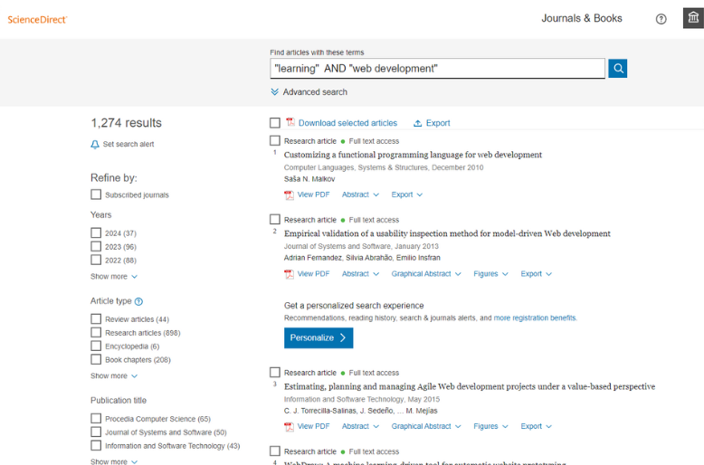
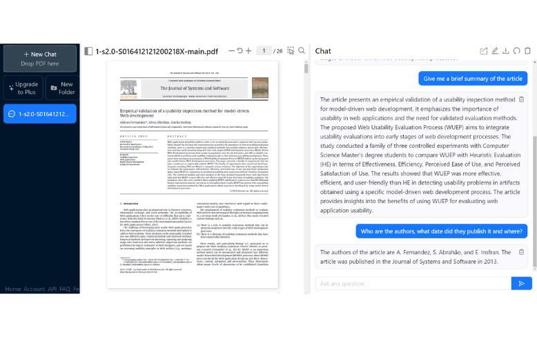

Autor
Nombre: Sebastian Samaniego
Codigo: 506231082

Universidad
Asignatura: Nuevas tecnologias de desarrollo
Carrera: Ingenieria de Sistemas
Institución: Fundación Universitaria Konrad Lorenz
Año publicación : Marzo 2024
Sobre la investigación
El articulo seleccionado fue: “Empirical validation of a usability inspection method for model-driven Web development” y las palabras clave para encontrarlo fueron: "learning" AND "web development"
Herramienta utilizada: ChatPDF
La herramienta de inteligencia artificial empleada para llevar a cabo el análisis del artículo seleccionado fue ChatPDF. Principalmente, esta herramienta se utilizó para formular cinco preguntas específicas sobre el artículo, identificar a sus autores, la fecha de publicación, y obtener un resumen detallado del mismo.
